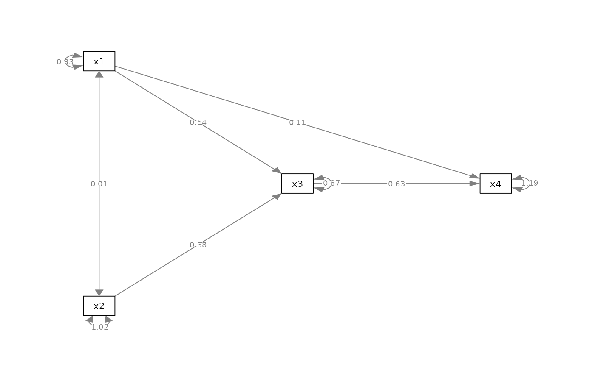
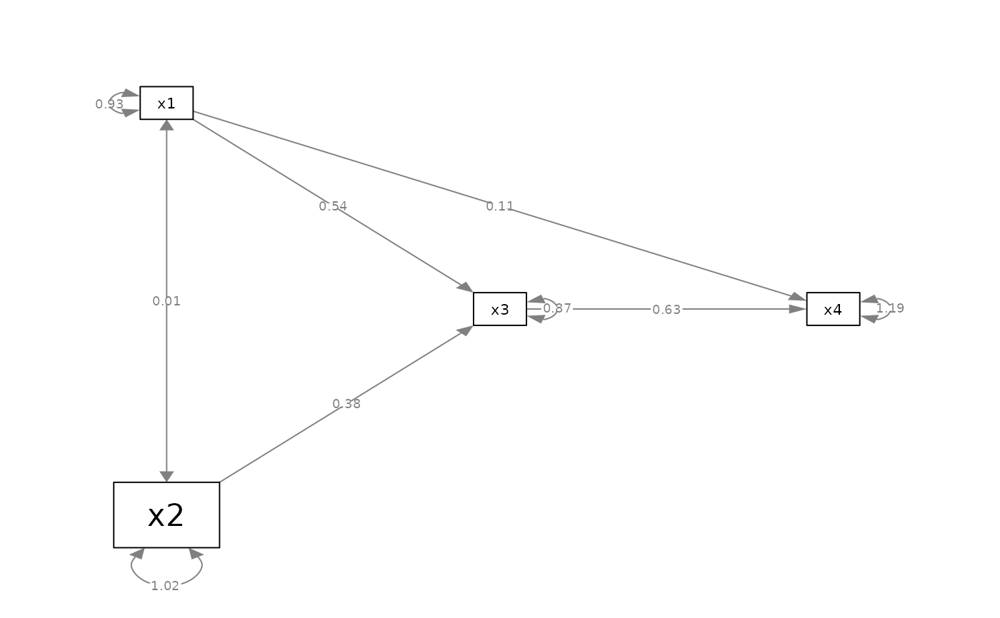
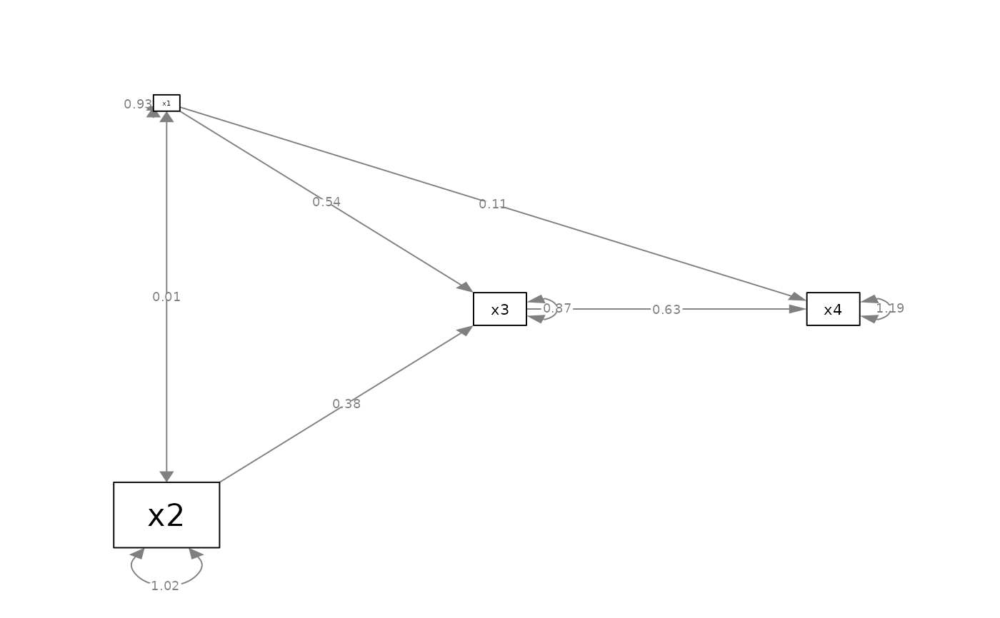

Set the sizes of selected nodes.
Usage
set_node_size(
semPaths_plot,
values = NULL,
how = c("ratio", "value"),
check_nodes = TRUE
)
set_node_width(
semPaths_plot,
values = NULL,
how = c("ratio", "value"),
check_nodes = TRUE
)
set_node_height(
semPaths_plot,
values = NULL,
how = c("ratio", "value"),
check_nodes = TRUE
)
set_node_shape(semPaths_plot, values = NULL, check_nodes = TRUE)Arguments
- semPaths_plot
A qgraph::qgraph object generated by semPlot::semPaths, or a similar qgraph object modified by other semptools functions. It can also be a list of qgraph::qgraph objects, probably though not necessarily from a multigroup model. If it is a list of qgraph::qgraph objects, then the function will be applied to all the objects.
- values
A named vector or a list of named list. See the Details section on how to set this argument.
- how
How the width will be changed. If
"ratio", then the new width is the original width multiplied by the supplied value. If"value", then the new width is set to the supplied value.- check_nodes
Logical. If
TRUEand at least one node specified invaluesare not insemPaths_plot.
Value
A qgraph::qgraph based on
the original one, with the sizes
of selected nodes changed.
If semPaths_plot is a list of
qgraph::qgraph objects, then a
list of processed qgraph::qgraph objects
will be returned.
Details
Modify a qgraph::qgraph object generated by semPlot::semPaths and change the sizes of selected nodes.
Setting the Size-Related Attributes
These arguments can be set in three ways.
For a named vector, the name of an element should be the nodes for which the attributes are to be changed. The names need to the displayed names if plotted, which may be different from the names in the model.
For example, to change the size-related attribute of x,
the name
should be "x". Therefore,
c("y" = 2, "x" = 3) changes
the selected attributes of the nodes y and x
to 2 and 3,
respectively.
For a list of named lists, each named
list should have two named values:
node and new_value. The
size-related attribute of node
will changed based on new_value.
The second approach is no longer recommended, though kept for backward compatibility.
The last approach is setting the size-related attribute to a one-element vector with no name. All nodes in plot will then have their sizes changed based on this value.
Shape, Width, and Height
How width and height are used
depends on shape. The supported
values of shape depends on
qgraph. Common values are
are "square", "rectangle",
"circle", "rectangle", and "ellipse". For
"square" and "circle", only the
value of width is used to determine
the size of the node.
Note on Changing a Value
There are also two modes for changing
an attribute. If how = "ratio",
then the new value, such as size,
is equal to
the original value multiplied
by the supplied value. For example,
if the supplied value is 2, and the
original size is 5, the new
size is 10.
If how = "value", then the new
value is set to the user
supplied value. For example, if the
supplied value is 15, then the new
value is 15, regardless of the
original value.
Examples
mod_pa <-
'x1 ~~ x2
x3 ~ x1 + x2
x4 ~ x1 + x3
'
fit_pa <- lavaan::sem(mod_pa, pa_example)
m <- matrix(c("x1", NA, NA,
NA, "x3", "x4",
"x2", NA, NA), byrow = TRUE, 3, 3)
p_pa <- semPlot::semPaths(fit_pa, whatLabels="est",
style = "ram",
nCharNodes = 0, nCharEdges = 0,
layout = m)

p_pa2v <- set_node_size(
p_pa, c(x1 = 5, x2 = 10),
how = "value"
)
plot(p_pa2v)

p_pa2v2 <- set_node_size(
p_pa, c(x1 = 0.5, x2 = 2),
how = "ratio"
)
plot(p_pa2v2)

p_pa2l <- set_node_shape(p_pa, "circle")
plot(p_pa2l)